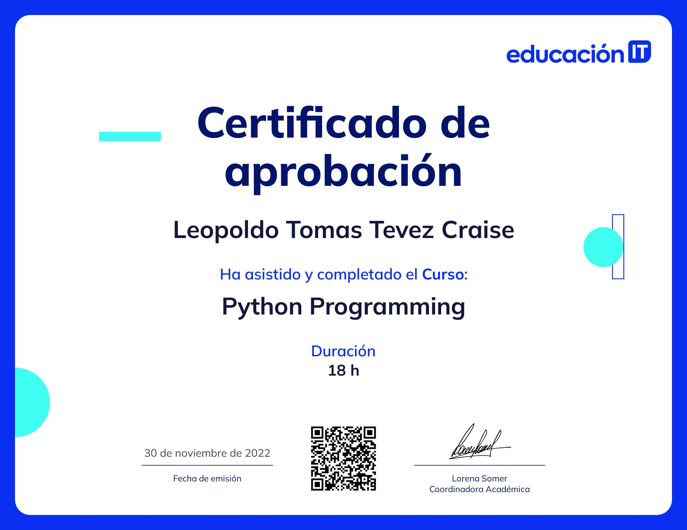

Currículum Vitae
Tevez Craise, Leopoldo Tomas

Datos Personales
- D.N.I.: 33.282.264
- C.U.I.L.: 20-33282264-1
- Sexo: Masculino.
- Fecha y lugar de nacimiento: 24/11/1987 (Brandsen).
- Nacionalidad: Argentina.
- Estado Civil: Soltero.
- Dirección: Garibaldi 670 e/ Castelli y Saavedra (Brandsen).
- C.P.: 1980
- Celular: (11) 4417-3495
- Correo Electrónico: tevezcraise.l.t@gmail.com
Objetivos
Acompañar a la empresa a lo largo de su crecimiento con el agrado de crecer junto a ella, aportando todos los conocimientos adquiridos para lograr los objetivos necesarios, manteniendo un buen ambiente laboral con mis pares y superiores, buscando que mis habilidades progresen y sean un beneficio para la empresa.
Formación Académica
- (2014 - 2015) Tramo de formación pedagógica de Nivel Medio. I.S.F.D y T. N°49 - (Promedio 8,88).
- (2011 - 2013) Tecnico Superior en Analisis de sistemas. I.S.F.D y T. N°49 - (Promedio 8,13).
- (2005) secundario completo. Bachillerato en Humanidades y Ciencias Sociales
Formación complementaria
Cursos |
Títulos |
| (2023)Cursando. Argentina Programa 4.0. ticmas | Sin título |
| (2022) Python Programing. Educacion IT. https://www.educacionit.com | |
|

|
|
|---|---|
| (2022) Python para no programadores. Educacion IT. https://www.educacionit.com | |
|
|
|
| (2022) Herramientas tecnico pedagogicos para el EMTP | |

|
|
Otros Conocimientos
Conocimientos |
Auto evaluación |
| Sistemas Operativos Windows (desde: W.95 hasta: W.11). | Avanzado |
| Arquitectura de PCs. | Avanzado |
| Reparador y armado de PCs. | Avanzado |
| Diseño de sistemas. | Avanzado |
| Programador Visual Basic 6.0. | Avanzado |
| Armado de redes. | Intermedio |
| Python | Intermedio |
| SQL Server 2005 - 2008. | Intermedio |
| MySQL | Intermedio |
| HTML5. | Básico |
| JavaScript. | Básico |
| CSS3. | Básico |
En caso de que se trate de algún software que no se encuentre en la lista, preguntar.
Experiencia Laboral
- (2014 - actualidad)
- DGCyE ( EMATP, Profesor: Secundaria Superior y Adultos)
- Capacitaciones a grupos de docentes en informática en todas las áreas.
- Talleres: - Proyecto de desarrolo de aplicaciones, Asistente para la utilizacion de aplicaciones generales, Desarrollo de programas y manipulacion de datos.
- (2008 - 2010) Construcción y mantenimiento de cancha de golf - Area60 (Brandsen)
- (2007 - 2008) Encargado con atención al cliente (Trabajo desarrollado en zona céntrica) - Cyber café Digital Center. (Brandsen)
- (2006 - 2007) Asistente personal - La Querencia. (Brandsen)
Experiencia Complementaria
- (2010 - 2013) Reparador de Pc y Armado, colocación de redes etc. - 107Informatica.
- (2010 - 2013) Programador Visual Basic 6.0 y Análisis con la creación de SCA (Sistema Control de Alumnos) para I.S.F.D y T N°49.
- (2011 - 2015) Coordinador de eventos para empresa PuntoCero, marcas: (JB, baileys, smirnoff, baat69. etc) en la costa (Pinamar, Villa Gesel, Mar Del Plata, etc.).
Idiomas
- Castellano: Lenguaje nativos
- Escrito: Avanzado.
- Oral: Avanzado.
- Inglés: Técnico
- Escrito: Intermedio.
- Oral: básico.
Otros Datos
- Licencia Nacional de Conducir:
- A.3.)Motocicletas de más de 300CC de cilindrada.
- B.1.) Autos, Utilitarios, camionetas y casas rod. mot. h/3.500 kg. de peso total.
- B.2.) Autos y camionetas h/3,500 Kg. de peso con acoplado de h/750 Kg. o casa rod. no mot.
- G.1.) Tractores agrícolas.
- G.2.) Maquinaria especial agrícola.
- Facilidad en el aprendizaje de nuevos programas y/o sistemas.
- Con ganas de profundizar en diferentes conocimientos relacionados a Análisis y Programación.
- Test de tipiado (150 palabras por minuto) en teclado 100%
- Dispuesto a viajar.
- Dispuesto a mudarse.